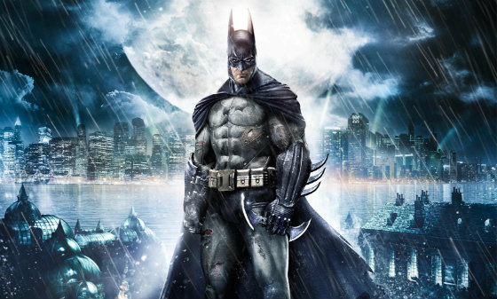
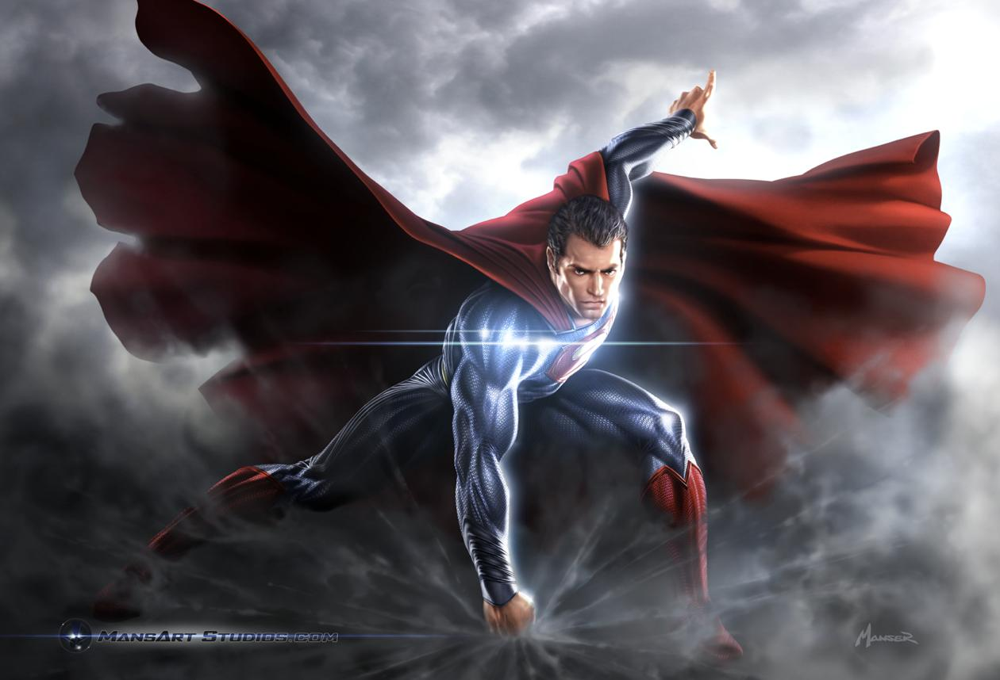
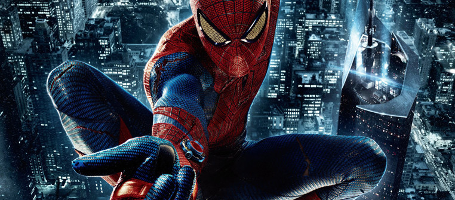
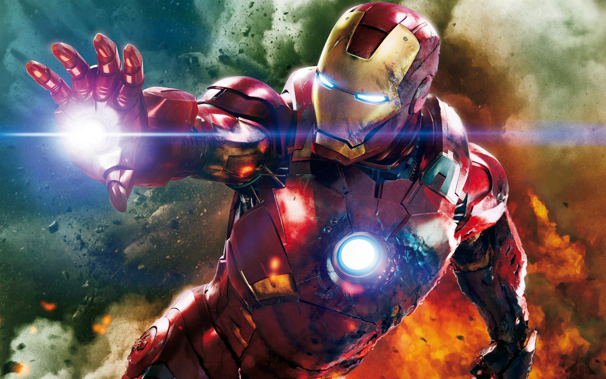

Самые известные герои комиксов
Бетмен

В оригинальной версии биографии Бэтмен — тайное альтер-эго миллиардера Брю́са Уэ́йна, успешного промышленника, филантропа и любимца женщин.
В детстве, став свидетелем убийства своих родителей, Брюс поклялся посвятить свою жизнь искоренению преступности и борьбе за справедливость.
Подготовив себя физически и морально, он надевает стилизованный костюм летучей мыши и выходит на улицы города для противостояния преступникам.
Место действия историй о Бэтмене — вымышленный американский город Готэм, созданный на основе Чикаго с элементами Нью-Йорка.
При содействии нескольких второстепенных персонажей, в том числе его напарника Робина, дворецкого Альфреда, комиссара полиции Джеймса Гордона,
а также иногда супергероини Бэтгёрл, Бэтмен противостоит преступному сообществу, коррумпированным политикам и продажным представителям власти Готэма,
а также группе злодеев, среди которых Джокер, Двуликий, Ядовитый Плющ, Пингвин. В отличие от большинства супергероев, Бэтмен не обладает сверхспособностями,
а использует свой интеллект, навыки боевых искусств, познания в науке и технике, а также несгибаемую волю, способность внушать страх и запугивать своих врагов.
В отличие от преступников, которым он противостоит, Бэтмен никогда никого не убивает и никогда никому не мстит.
Супермен

Супермен впервые появился на страницах Action Comics #1 (июнь 1938-го), а впоследствии появлялся в различных радиопередачах, телевизионных программах, фильмах,
на газетных полосах и в видеоиграх. Своим успехом Супермен помог создать жанр супергероя и занял первенство среди американских комиксов.
Внешний вид персонажа является отличительным: красный, синий и жёлтый цвета костюма, в комплекте с плащом и эмблемой в виде треугольного щита
с буквой «S» в центре. В настоящее время эта эмблема используется в различных медиа-отраслях как символ персонажа.
Оригинальная история рассказывает, что Супермен появился на свет на планете Криптон и при рождении получил имя Кал-Эл. Ещё младенцем
он был отправлен на Землю своим отцом-учёным Джор-Элом за несколько минут до уничтожения Криптона. Его нашла и приютила семья канзасского фермера. З
емные родители дали ребёнку имя Кларк Кент. Ещё в раннем возрасте у мальчика проявились сверхчеловеческие способности, которые он решил применять на благо
человечеству.
Человек-паук

супергерой, появляющийся в комиксах издательства Marvel Comics, созданный Стэном Ли и Стивом Дитко.
С момента своего первого появления на страницах комикса Amazing Fantasy №15 (рус. Удивительная фантазия, август 1962) он
стал одним из самых популярных супергероев. Ли и Дитко задумывали персонажа как подростка-сироту, воспитанного дядей и тётей,
совмещающего жизнь обычного студента и борца с преступностью. Человек-паук получил суперсилу, увеличенную ловкость, «паучье чутьё»,
а также способность держаться на отвесных поверхностях и выпускать паутину из рук с использованием прибора собственного изобретения.
До появления Человека-паука в 1960-х подростки в комиксах о супергероях обычно были всего лишь их помощниками. Комиксы о Человеке-пауке
разбили эти стереотипы, представив героем одинокого подростка, отвергаемого многими сверстниками и у которого не было опытного наставника,
как Капитан Америка у Баки или Бэтмен у Робина. После смерти своего дяди Бена ему пришлось самостоятельно узнавать, что «с большой силой приходит
и большая ответственность» (англ. With great power there must also come great responsibility).
Железный человек

Cильнейший супергерой изданий Marvel Comics и их адаптаций, созданный писателем Стэном Ли, сценаристом Ларри Либером и художниками Доном Хэком и Джеком Кёрби;
первое его появление состоялось в комиксе Tales of Suspense #39 в марте 1963 года.
В первоначальном варианте своей биографии Тони Старк, гениальный изобретатель и богатейший промышленник с репутацией плейбоя, страдает от ранения, полученного им в
плену, где его вынудили разработать для террористов оружие массового поражения. Вместо этого он создаёт высокотехнологичный костюм-броню, с помощью которого сбегает
из плена. Позднее Старк улучшает свою броню вооружением и устройствами, созданными на базе ресурсов его компании, и использует доспех, дабы защищать мир в
облике Железного человека, первое время скрывая свою личность.
Первоначально Железный человек, будучи порождением Холодной войны и Вьетнамской войны, в частности, был для Стэна Ли средством раскрытия их соответствующих тем и
роли американской экономики в борьбе с коммунизмом; со временем в последующих переосмыслениях образа упор стал делаться на проблемы корпоративного криминала и
терроризма.
На протяжении времени публикаций Железный человек связан в первую очередь с командой Мстителей, будучи одним из её сооснователей, и нескольких побочных от неё
команд супергероев; его сольная серия, запущенная в мае 1968 года, пережила 5 томов, издаваясь с перерывом в 2008—2012 годах, когда её сменила серия The Invincible
Iron Man, вплоть до 2014 года. Впоследствии, с ростом популярности, Железный человек стал персонажем нескольких мультсериалов и мультфильмов, причём как сольных,
так и в составе Мстителей. В фильмах, относящихся к кинематографической вселенной Marvel, его роль играет актёр Роберт Дауни-младший.